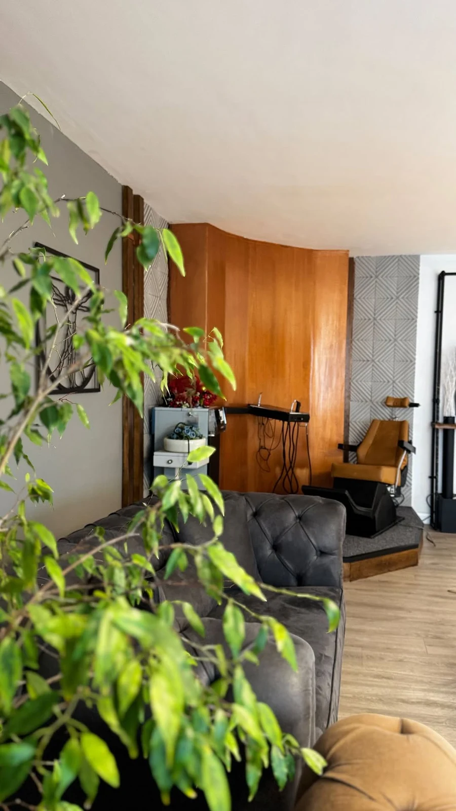

Konum
Harita Google Haritalar’dan yüklenir.

Caddebostan / Kadıköy
Kliniğe ulaşım bilgileri ve randevu talebi.
Güncel hasta kabul saatlerini ve randevu seçeneklerini DoktorTakvimi profilinden kontrol edebilirsiniz.
Telefon numarası DoktorTakvimi profilinde randevu hattı olarak listeleniyor.
Harita Google Haritalar’dan yüklenir.
